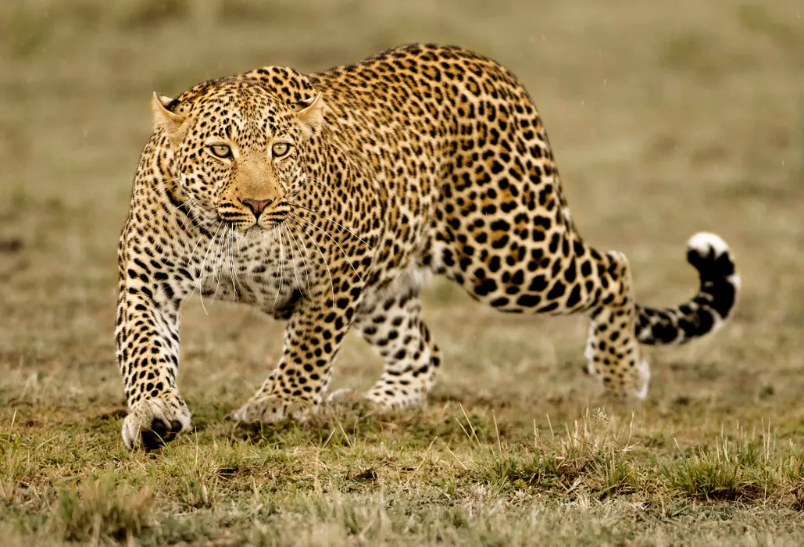
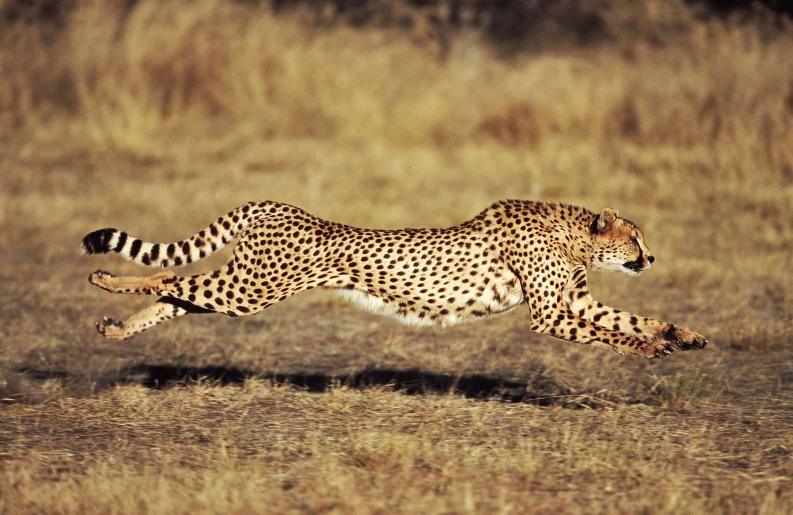
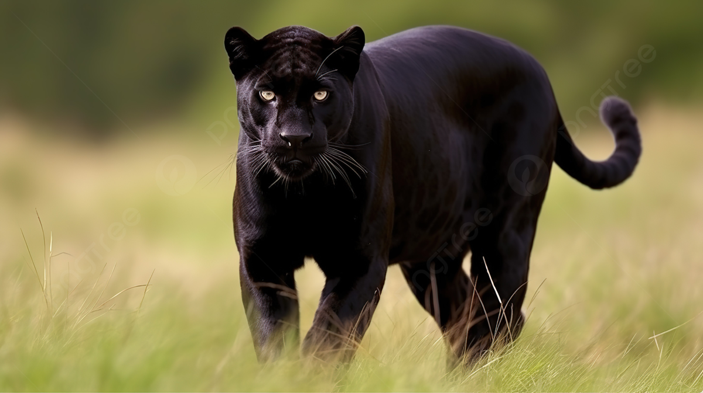

Lion (Panthera leo)
Lions are majestic carnivores known for their iconic manes, which are more prominent in males. They are primarily found in Africa's savannas and grasslands, living in prides consisting of related females, their offspring, and a few adult males. Lions are apex predators, hunting large ungulates like zebras and wildebeests. They are characterized by their powerful roars and are often referred to as "king of the jungle."
Tiger (Panthera tigris)
Tigers are the largest of the big cats and are native to Asia, particularly the dense forests and grasslands of countries like India, Russia, and Indonesia. They are solitary animals, except during mating and when raising cubs. Tigers are known for their striking orange coats with black stripes, which provide excellent camouflage in their natural habitat. They are formidable hunters, preying on a variety of animals, including deer, boar, and even large prey like water buffalo.

Leopard (Panthera pardus)
Leopards are agile and adaptable big cats found across Africa and parts of Asia. They have a distinctive spotted coat that helps them blend into their surroundings, making them highly effective ambush predators. Leopards are solitary animals, except during mating and when raising young. They have a wide-ranging diet, including small to medium-sized mammals, birds, and occasionally larger prey like antelope.
Cheetah (Acinonyx jubatus)
Cheetahs are renowned for their incredible speed, capable of reaching speeds up to 60-70 miles per hour in short bursts, making them the fastest land mammals. They are native to Africa and some parts of Iran. Unlike other big cats, cheetahs have a slender build, with a distinctive spotted coat and a long tail for balance while sprinting. They primarily hunt small to medium-sized antelopes using their speed and agility.


Balck Panther (Panthera pardus)
These melanistic cats have a genetic variation that causes an excess of dark pigment (melanin) in their fur, resulting in a predominantly black coat. Despite their name, black panthers still retain the characteristic markings of their species, such as the rosettes on leopards or the faint spots on jaguars. They are stealthy predators, well-adapted to hunting in low-light conditions due to their dark coloration. In folklore and popular culture, black panthers are often associated with mystery, elegance, and stealth.